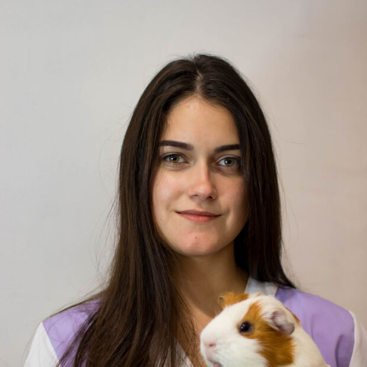
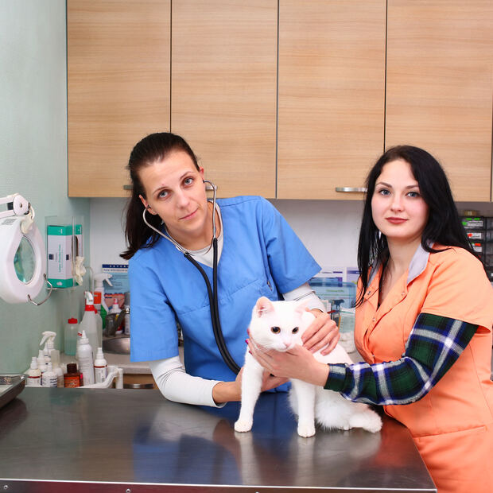
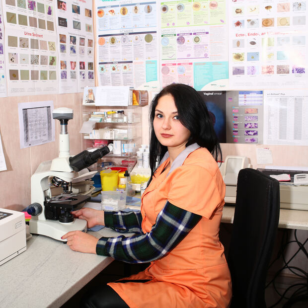
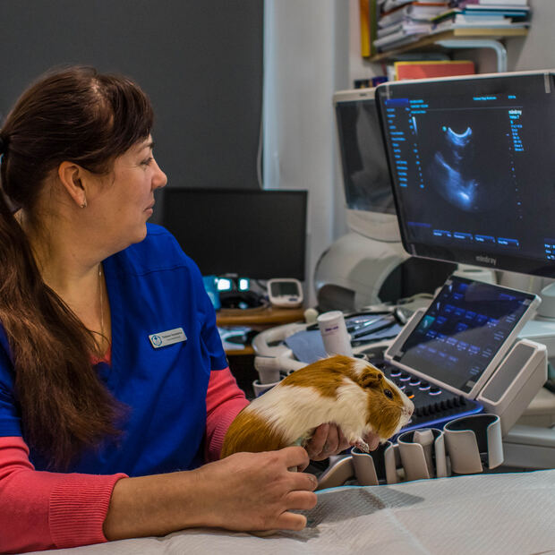
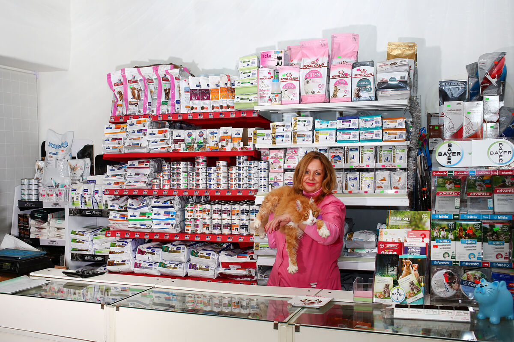

Terapija un diagnostika
Pirmreizējā vizīte, izmeklēšana, asins analīzes un ārstēšanas plāns vienā apmeklējumā.
Uzzināt vairākVeterinārā klīnika Zolitūdē
Mēs mīlam savus pacientus un izturamies pret tiem uzmanīgi un iejūtīgi. Terapija, diagnostika, ķirurģija un grūmings Zolitūdē — katru dienu.
Pieteikt vizīti Mūsu pakalpojumi
Klientu atsauksmes — vieta gaida īstas

Mūsu piegādātāji


 Purina ProPlan
Purina ProPlanKo mēs darām
Četri virzieni, kuros klīnika strādā katru dienu.
Pirmreizējā vizīte, izmeklēšana, asins analīzes un ārstēšanas plāns vienā apmeklējumā.
Uzzināt vairākPlānveida un neatliekamās operācijas ar pilnu narkozi un pēcoperācijas uzraudzību.
Uzzināt vairākUltrasonogrāfija un digitālais rentgens ar aprakstu tajā pašā vizītē.
Uzzināt vairākVakcinācija, mikročipēšana, grūmings un nagu apgriešana.
Uzzināt vairākPakalpojumi
Katram pakalpojumam būs sava lapa ar aprakstu un aprīkojuma fotogrāfijām.
Kā tas notiek
Vienojamies par laiku pa tālruni. Neatliekamos gadījumos pieņemam bez pieraksta.
Paula Lejiņa 5, Zolitūde. Pieņemam līdz 21:00, svētdienās līdz 15:00.
Apskate, nepieciešamās analīzes un skaidrs ārstēšanas plāns ar cenām.
Sākam ārstēšanu un sazināmies par katru nākamo soli.
Mūsu komanda
Vārdus un fotogrāfijas aizstās klīnika.





Par mums
Veterinārmedicīna – tā nav tikai mūsu profesija, bet arī mūsu aicinājums. Veterinārās klīnikas “Bišu Dārzs” ārstiem ir pietiekama darba pieredze un milzīgs potenciāls. Mēs nesolam jums brīnumus, mēs sniedzam reālu palīdzību Jūsu mīluļiem!
Mēs savus panākumus esam ieguvuši nevis pateicoties PR un reklāmai — mēs vienkārši katru dienu veicam savu darbu, bet darām to profesionāli un godprātīgi. Visi mūsu klīnikas darbinieki ir jauni, iniciatīvi, mērķtiecīgi cilvēki, kas strādā draudzīgā kolektīvā. Individuāla, neformāla pieeja katram klientam ļauj mums strādāt vēl efektīvāk.

Zooveikals
Veterinārajā klīnikā «Bišu Dārzs» ir arī zooveikals, kurā varēsiet iegādāties preces dzīvnieku aprūpei un labāko profesionālo barību jūsu dzīvniekam.
Purina ProPlanAtsauksmes
Šī sadaļa gaida īstas atsauksmes. Ja to nebūs, sadaļu var noņemt.
Šeit būs klienta atsauksme — divi vai trīs teikumi par to, kā veicās vizīte un ko klīnika izdarīja labi.
Otrā atsauksme. Klīnika tās savāks pati; līdz tam šis bloks rāda, cik daudz teksta te ietilpst.
Trešā atsauksme. Ja atsauksmju nav, visu sadaļu var noņemt — pārējā lapa no tā necieš.
BUJ
Ultraskaņas un rentgena izmeklējumi tiek veikti pēc iepriekšēja pieraksta. Neatliekamos gadījumos pieņemam arī bez pieraksta — zvaniet, un mēs pateiksim, cik ilgi būs jāgaida.
Svētdienās strādājam no 10:00 līdz 15:00. Pārējās dienās — no 9:00 līdz 21:00.
Suņus, kaķus, trušus, kā arī žurkas, kāmjus un jūrascūciņas. Sniedzam arī profesionālu konsultāciju bišu ārstēšanā.
Jā. Mājas vizīte maksā 60 €; par izbraukumiem ārpus Rīgas vienojamies atsevišķi.
Ar autobusiem Nr. 53, 46, 44 un 8 — līdz pieturai “Anniņmuižas iela”. Klīnika ir apmēram 200 m no dzelzceļa stacijas “Zolitūde”.
Jā. Izraksts par veikto ārstēšanu maksā 15 €, detalizēts izraksts — 30 €. Noformējam arī izziņas, žetonus, pases un dokumentus dzīvnieku ceļošanai.
Zvani vai atnāc — Paula Lejiņa 5, Zolitūde. Pieņemam katru dienu.
Kontakti
Klīnika atrodas Zolitūdē, P. Lejiņa ielā 5 — apmēram 200 m no dzelzceļa stacijas “Zolitūde”. Kā orientieris — māja Nr. 9 P. Lejiņa ielā; apmēram pēc 200 m būs redzamas divas brūnas piebūves, otrajā no tām ir veterinārā klīnika.
Ar autobusiem Nr. 53, 46, 44 un 8 — līdz pieturai “Anniņmuižas iela”.